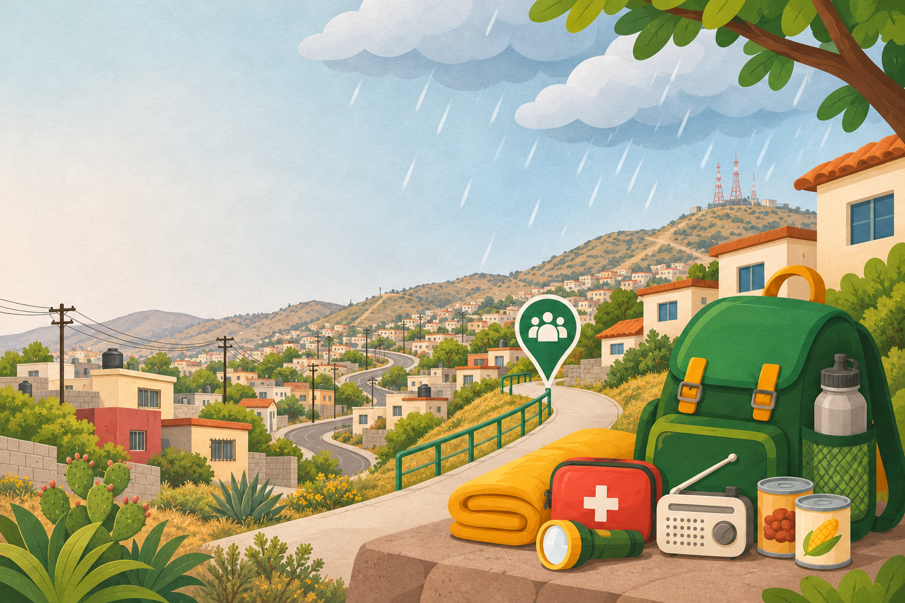

Lluvias intensas
En poco tiempo pueden reducir la visibilidad, saturar el suelo y dificultar los traslados.
INFORMACIÓN PARA COMPRENDER Y PREPARARSE
Conozca el fenómeno, ubique los riesgos de su entorno y encuentre acciones claras para prepararse en familia.
Explore la información
✦Conozca · Planee · PrepáreseInformación útil para su comunidadACCIONES PARA SU FAMILIA
Consulte los pasos y adapte cada recomendación a las necesidades de su hogar.
RUTA DE APRENDIZAJE
Avance a su ritmo: comprenda El Niño, organice un plan familiar y prepare su mochila.
RIESGOS EN TIJUANA
La lluvia intensa puede afectar de manera distinta a cada zona. Reconocer estos riesgos ayuda a decidir con anticipación.
En poco tiempo pueden reducir la visibilidad, saturar el suelo y dificultar los traslados.
Las laderas y cañadas pueden volverse más peligrosas cuando el terreno se humedece y pierde estabilidad.
Arroyos, calles bajas y pasos a desnivel pueden acumular agua. No intente cruzarlos.
APRENDA CON UNA DINÁMICA
Atiende rutas seguras, reconocimiento de puntos de riesgo y decisiones en equipo durante una lluvia intensa.
Conozca la dinámica →Evalúe situaciones, elija una opción y observe sus consecuencias para reflexionar sobre cada decisión.
Conozca la dinámica →Practique cómo priorizar los artículos esenciales para una emergencia.
Conozca la dinámica →PARA TENER A LA MANO
Si hay peligro inmediato, llame al 911. Para reportar un delito de forma anónima, llame al 089; está disponible las 24 horas.